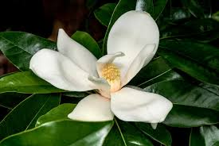

Ir abajo
Flor de Mayo

Pulse sobre la imagen para obtener más información
La Flor de Mayo, conocida científicamente como Plumeria rubra, es una de las flores más representativas de México y otras regiones tropicales. Su nombre popular se debe a su abundante floración durante el mes de mayo. Esta flor es reconocida por su belleza y por el suave aroma que desprende, que ha inspirado a muchas culturas a asociarla con la pureza, la paz y la espiritualidad.
Las flores de la Plumeria presentan colores vibrantes que van desde el blanco y el amarillo hasta tonalidades rosadas y rojas. Su forma es de cinco pétalos en espiral, lo que las hace especialmente atractivas. Además, es común encontrarla en jardines, parques y áreas urbanas debido a su resistencia al calor y a su capacidad para florecer incluso en condiciones adversas.
Usos tradicionales:
La Flor de Mayo ha sido utilizada desde la antigüedad por diversas culturas mesoamericanas. En la medicina tradicional, sus hojas y flores se usan para tratar problemas de piel y aliviar el estrés. Asimismo, su madera es valorada para la fabricación de artesanías y productos decorativos.
En el ámbito espiritual, la Flor de Mayo es común en rituales y ofrendas, ya que se le atribuyen propiedades purificadoras. También se utiliza en la elaboración de perfumes y aceites esenciales gracias a su delicado aroma.
Características botánicas:
La Plumeria rubra es un árbol pequeño que puede alcanzar alturas de 5 a 8 metros. Sus hojas son grandes, de color verde oscuro, con una textura lisa. Las flores son su principal atractivo, floreciendo durante la primavera y el verano. El árbol es resistente a la sequía, lo que lo convierte en una planta ideal para regiones cálidas y tropicales.
Además, la Flor de Mayo produce un látex lechoso que puede ser tóxico si se ingiere, por lo que debe manejarse con cuidado.
Importancia ecológica:
Este árbol es fundamental en su ecosistema, ya que sus flores atraen a polinizadores como abejas, mariposas y colibríes. Además, sirve como refugio para pequeños insectos y aves. Su resistencia a climas secos lo convierte en un elemento clave para mantener la biodiversidad en zonas áridas y semiáridas.
Conservación:
Aunque la Flor de Mayo es común en muchas regiones, enfrenta amenazas como la deforestación y la urbanización. La conservación de esta especie es esencial para preservar su valor cultural y ecológico. Se recomienda plantar más ejemplares en jardines comunitarios y fomentar su uso ornamental en lugar de otras especies invasoras.
Ir arriba